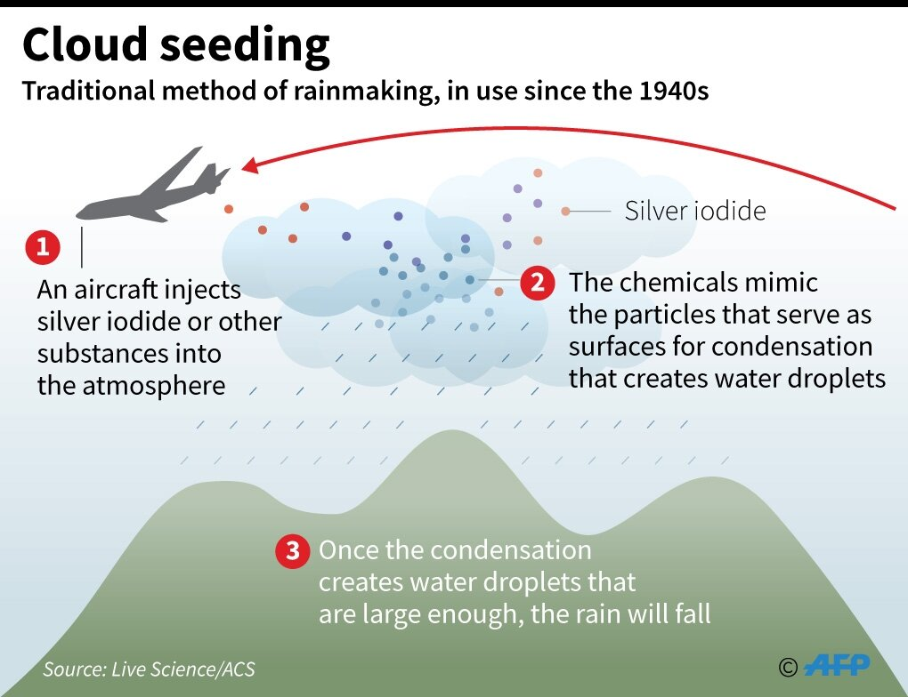
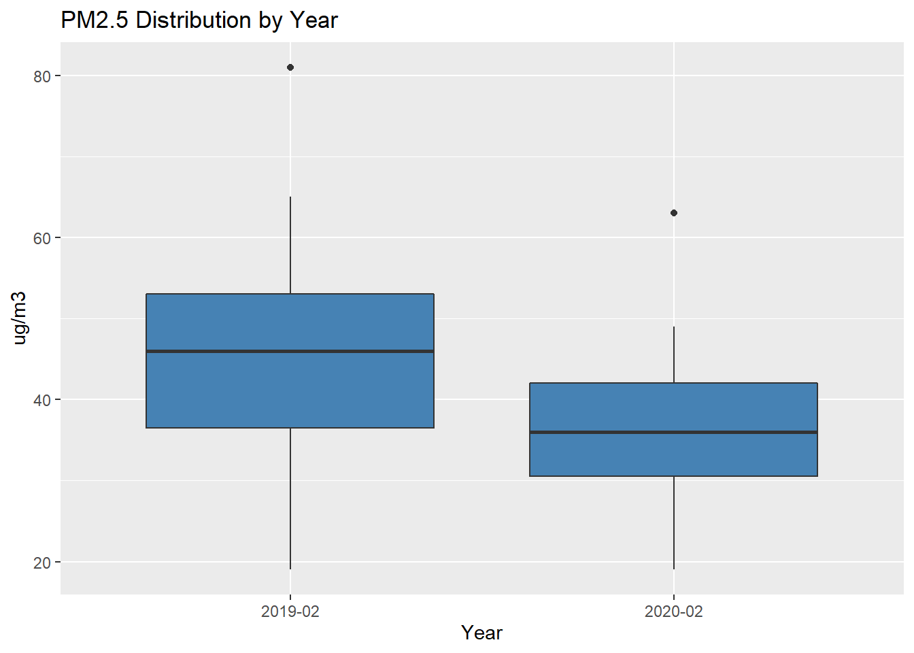
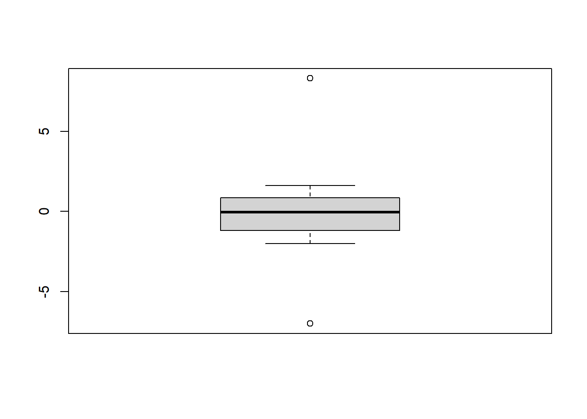
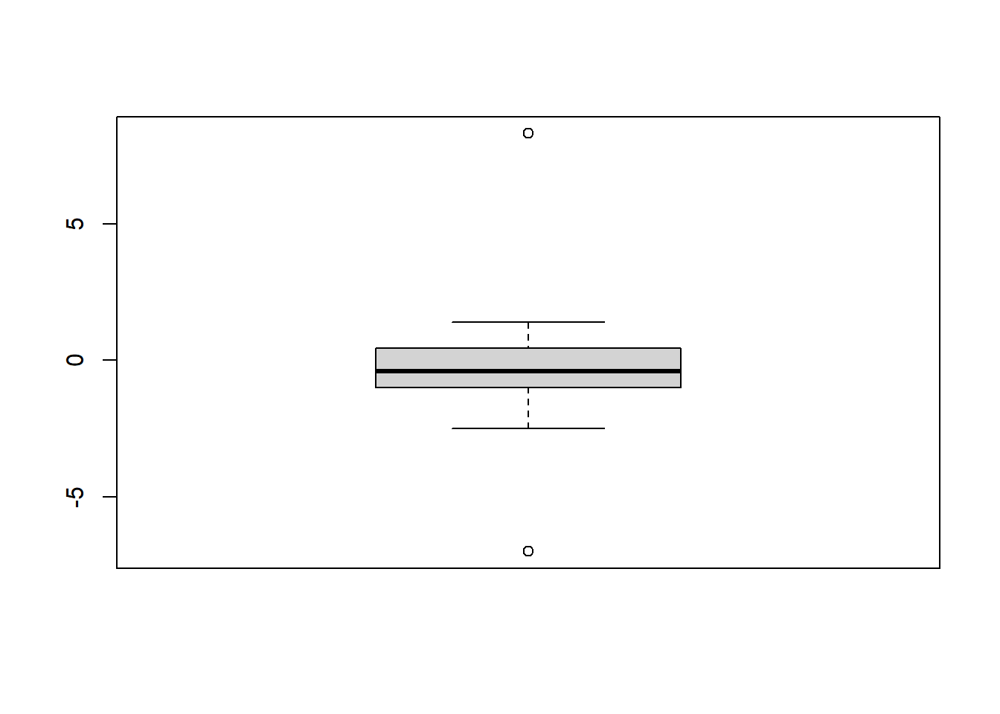

Load the libraries with R:
## Warning: 程辑包'EnvStats'是用R版本4.3.3 来建造的##
## 载入程辑包：'EnvStats'## The following objects are masked from 'package:moments':
##
## kurtosis, skewness## The following objects are masked from 'package:stats':
##
## predict, predict.lm
Cloud seeding is the process where substances like dry ice and silver iodide are put into clouds in an attempt to make precipitation fall. Cloud seeding has also been used to dissipate fog and weaken some storms.
The case study in [RS] 3.1 provides an example of cloud seeding.
Rainfall (acre-feet) were measured before and after the seeding. See
page 59-60 for more.
26):1202.6, 830.1, 372.4, 345.5, 321.2, 244.3, 163.0, 147.8, 95.0, 87.0, 81.2, 68.5, 47.3
41.1, 36.6, 29.0, 28.6, 26.3, 26.0, 24.4, 21.4, 17.3, 11.5, 4.9, 4.9, 1.0
26):2745.6, 1697.1, 1656.4, 978.0, 703.4, 489.1, 430.0, 334.1, 302.8, 274.7, 274.7, 255.0
242.5, 200.7, 198.6, 129.6, 119.0, 118.3, 115.3, 92.4, 40.6, 32.7, 31.4, 17.5, 7.7, 4.1
Suppose we want to know whether cloud seeding has an effect on rainfall in this experiment. If so, by how much?
Let’s look at the data first:
# Samples
Unseeded <- c(1202.6, 830.1, 372.4, 345.5, 321.2, 244.3, 163.0, 147.8, 95.0, 87.0,
81.2, 68.5, 47.3, 41.1, 36.6, 29.0, 28.6, 26.3, 26.0, 24.4, 21.4,
17.3, 11.5, 4.9, 4.9, 1.0)
shapiro.test(Unseeded)##
## Shapiro-Wilk normality test
##
## data: Unseeded
## W = 0.60219, p-value = 3.134e-07Seeded <- c(2745.6, 1697.1, 1656.4, 978.0, 703.4, 489.1, 430.0, 334.1, 302.8,
274.7, 274.7, 255.0, 242.5, 200.7, 198.6, 129.6, 119.0, 118.3,
115.3, 92.4, 40.6, 32.7, 31.4, 17.5, 7.7, 4.1)
shapiro.test(Seeded)##
## Shapiro-Wilk normality test
##
## data: Seeded
## W = 0.65626, p-value = 1.411e-06# Make data frame
Rainfall_data <- data.frame(Rainfall = c(Unseeded, Seeded),
Seeded= c(rep("No",length(Unseeded)),
rep("Yes",length(Seeded))))
# Compare boxplots
ggplot(Rainfall_data, aes(x=as.character(Seeded), y=Rainfall)) +
geom_boxplot(fill="steelblue") +
labs(title="Rainfall Distribution", x="Seeded", y="Rainfall [acre-feet]")
What do you observe? Are the samples from normal distributions?
The Wald–Wolfowitz runs test (or simply runs test) is a non-parametric statistical test that checks a randomness hypothesis for a two-valued (binary) data sequence. More precisely, it can be used to test the hypothesis that the elements of the sequence are mutually independent. A run of a sequence is a maximal non-empty segment of the sequence consisting of adjacent equal elements.
For a sample, it is converted to a binary data sequence by taking the
data in the given order and marking with + the data greater
than the median, and with – the data less than the median.
This is why the method is also called runs above-and-below the
median test.
The null and alternative hypotheses of the runs test are:
H0: The data was produced in a random manner
H1: The data was not produced in a random manner
In R, the runs test is done with the runs.test()
function from the randtests library:
# Create a sample
Sample1 <- c(12, 16, 16, 15, 14, 18, 19, 21, 13, 13, 12, 16, 16, 15, 14)
# Perform Runs test
runs.test(Sample1)##
## Runs Test
##
## data: Sample1
## statistic = -0.26914, runs = 7, n1 = 7, n2 = 6, n = 13, p-value = 0.7878
## alternative hypothesis: nonrandomness# Make a new sample,
# where the second half is correlated with the first half
Sample2 <- c(Sample1,Sample1*2)
# Perform Runs test
runs.test(Sample2)##
## Runs Test
##
## data: Sample2
## statistic = -5.2026, runs = 2, n1 = 15, n2 = 15, n = 30, p-value = 1.966e-07
## alternative hypothesis: nonrandomnessEven though we have been emphasizing that normality is the key
assumption of t-tools (one-sample,
independent
two-sample, and paired
samples). It turns out t-tools are very robust to
samples from non-normal populations, as long as the sample sizes are
reasonably large (larger than 50, this is arbitrary, but
generally should be larger than 30).
To demonstrate this, we draw samples from log-normal distributions and conduct the t-test. Run the following R scripts:
# Total simulations
Total_simulations <- 1000
# Population 1, form a log normal distribution
pop1 <- rlnorm(4000, 1, 0.2)
lillie.test(pop1)##
## Lilliefors (Kolmogorov-Smirnov) normality test
##
## data: pop1
## D = 0.044374, p-value < 2.2e-16## [1] 0.5700565##
## Lilliefors (Kolmogorov-Smirnov) normality test
##
## data: pop2
## D = 0.1185, p-value < 2.2e-16## [1] 2.24794# Sample size
N1 <- 100
N2 <- 100
# List to store p-value
p_value <- c()
# Run simulation
for(i in 1:Total_simulations){
# Sample 1
s1 <- sample(pop1,N1)
# Sample 2
s2 <- sample(pop2,N2)
# Do t-test, despite of the normality
p_value <- c(p_value, t.test(s1,s2,var.equal=T)$p.value)
}
# Check the robustness
length(which(p_value<0.05))/Total_simulations## [1] 1For small samples, t-tools are also robust if the skewness in the populations differs not much.
## [1] 0.6147801## [1] 2.281493# Sample size
N1 <- 10
N2 <- 20
# List to store p-value
p_value <- c()
# Run simulation
for(i in 1:Total_simulations){
# Sample 1
s1 <- sample(pop1,N1)
# Sample 2
s2 <- sample(pop2,N2)
# Do t-test, despite of the normality
p_value <- c(p_value, t.test(s1,s2,var.equal=T)$p.value)
}
# Check the robustness
length(which(p_value<0.05))/Total_simulations## [1] 0.991The bottom line is:
When the skewness in the populations differs too much (especially when the sample sizes are small), the t-tools are not robust, thus may result in misleading outputs.
# Total simulations
Total_simulations <- 1000
# Population 1, form a log normal distribution
pop1 <- rlnorm(4000, 1, 0.2)
skewness(pop1)## [1] 0.6109037## [1] 19.26272# Sample size
N1 <- 10
N2 <- 20
# List to store p-value
p_value <- c()
# Run simulation
for(i in 1:Total_simulations){
# Sample 1
s1 <- sample(pop1,N1)
# Sample 2
s2 <- sample(pop2,N2)
# Do t-test, despite of the normality
p_value <- c(p_value, t.test(s1,s2,var.equal=T)$p.value)
}
# Check the robustness
length(which(p_value<0.05))/Total_simulations## [1] 0.07The independent two-sample t-test requires the two populations to have the same variance, and sample SDs are independent estimates. However, such an assumption is not necessarily the case in reality. One may employ the individual sample SD (s1 and s2) as separate estimates of their respective population standard deviations, rather than polling to obtain a single estimate of a population SD. The standard error of the difference in two population means is then:
\[ SE_W(\overline{X_1} - \overline{X_2}) = \sqrt { \frac{s_1^2} {n_1} + \frac{s_2^2} {n_2} } \] This ends up the Welch t-ratio:
\[t=\frac { (\overline{X_1} - \overline{X_2} ) - (\mu_1 - \mu_2) } { \sqrt { \frac{s_1^2} {n_1} + \frac{s_2^2} {n_2} } } \]
which approximately follows a t-distribution with d.f.W degrees of freedom:
\[ d.f._W = \frac {SE_W^4(\overline{X_1} - \overline{X_2})} { \frac{SE^4(\overline{X_1})} {n_1-1} + \frac{SE^4(\overline{X_2})} {n_2-1} } \] where \(SE(\overline{X_1})=\frac {s_1}{\sqrt{n_1}}\) and \(SE(\overline{X_2})=\frac {s_2}{\sqrt{n_2}}\).
Let’s use the observations again, but now we have no information about the population SDs. Therefore, we need to conduct an independent two-sample t-test.
H0: Mean PM2.5 level in Shenzhen is the same as that in Guangzhou (\(\mu_1 = \mu_2\))
H1: Mean PM2.5 level in Shenzhen is not the same as that in Guangzhou (\(\mu_1 \ne \mu_2\))
In this case, \(\overline X_1 - \overline
X_2\) is -2.32, \(SE_W(\overline{X_1} - \overline{X_2})\) is
0.93, assuming H0 is true (\(\mu_1 - \mu_2 = 0\)), we have \(t\)=-2.48.
Then the p-value can be calculated manually:
# Shenzhen
SZ_PM2.5 <- c(25.6, 23.7, 21.9, 26.0, 24.5, 22.4, 26.7, 24.6, 22.7, 23.8)
# Guangzhou
GZ_PM2.5 <- c(27.1, 24.2, 27.9, 33.3, 26.4, 28.7, 25.6, 23.2, 24.0, 27.1, 26.2, 24.4)
# Sample difference
mean(SZ_PM2.5) - mean(GZ_PM2.5)## [1] -2.318333# Get sample size, degrees of freedom, and sd
n1 <- length(SZ_PM2.5)
df1 <- n1 - 1
sd1 <- sd(SZ_PM2.5)
n2 <- length(GZ_PM2.5)
df2 <- n2 - 1
sd2 <- sd(GZ_PM2.5)
# SE of the difference
SE_W <- sqrt( sd1^2/n1 + sd2^2/n2 )
# d.f.W
df_W <- SE_W^4/( (sd1/sqrt(n1))^4/(n1-1) + (sd2/sqrt(n2))^4/(n2-1) )
# Get t-ratio
t <- (mean(SZ_PM2.5) - mean(GZ_PM2.5))/SE_W
# Find the two-side p-value
# The pt function gives the Cumulative Distribution Function (CDF)
# of the Student's t distribution in R, which is the probability that
# the variable takes a value lower or equal to a threshold (here |t|).
P_value <- (1-pt(abs(t), df=df_W))*2
print(P_value)## [1] 0.0230154Now, we have a probability of about 2.30% getting a
statistic (\(t\)) as extreme or more
extreme than the observed statistic (-2.48), assuming H0 is
true. This is a small probability, and is likely due to chance. We can
reject H0 given the observations. Thus, the mean PM2.5 level in Shenzhen
is not the same as that in Guangzhou.
In R, you can simply conduct the previous independent two-sample t-test as:
H0: Mean PM2.5 level in Shenzhen is the same as that in Guangzhou (\(\mu_1 = \mu_2\))
H1: Mean PM2.5 level in Shenzhen is not the same as that in Guangzhou (\(\mu_1 \ne \mu_2\))
In R, this is done by:
# Shenzhen
SZ_PM2.5 <- c(25.6, 23.7, 21.9, 26.0, 24.5, 22.4, 26.7, 24.6, 22.7, 23.8)
# Guangzhou
GZ_PM2.5 <- c(27.1, 24.2, 27.9, 33.3, 26.4, 28.7, 25.6, 23.2, 24.0, 27.1, 26.2, 24.4)
# Call t.test function
# Since H1 states a different PM2.5 value in Shenzhen,
# we need to compute the two-sided p-value
t.test(SZ_PM2.5, GZ_PM2.5, alternative="two.sided", var.equal=F)##
## Welch Two Sample t-test
##
## data: SZ_PM2.5 and GZ_PM2.5
## t = -2.4829, df = 18.162, p-value = 0.02302
## alternative hypothesis: true difference in means is not equal to 0
## 95 percent confidence interval:
## -4.2787371 -0.3579296
## sample estimates:
## mean of x mean of y
## 24.19000 26.50833Here we set var.equal = F when call the
t.test() function. By doing so, we assume an “unequal SD”
method. R uses this “unequal SD” method by default.
An outlier is a value or an observation that is distant from other observations, or, a data point that differs significantly from other data points. Since the t-tools are based on average, they are not resistant to outliers. One or two outliers may affect a confidence interval or change a p-value enough to alter a conclusion completely.
We previously checked outliers by looking at histogram, boxplot, and
1.5*IQR of the data. In this sub-section, we will look at
4 more formal techniques/tests to detect outliers.
Grubbs’ test allows detecting whether the highest or lowest
value in a dataset is an outlier. The test detects one outlier
at a time (highest or lowest value). Note that Grubbs’ test is
not appropriate for a sample size of 6 or less.
If we want to test the highest value, the null and alternative hypotheses are as follows:
H0: The highest value is not an outlier
H1: The highest value is an outlier
If we want to test the lowest value, the null and alternative hypotheses are as follows:
H0: The lowest value is not an outlier
H1: The lowest value is an outlier
To perform Grubbs’ test in R, use the grubbs.test()
function from the outliers package:
# Sample
Sample1 <- c(0.2, 0.8, -2.0, -7.0, -0.8, 0.8, 0.9, -1.1, -1.3, -0.3, 1.6, 8.3)
# Boxplot
boxplot(Sample1)
##
## Grubbs test for one outlier
##
## data: Sample1
## G = 2.41000, U = 0.42399, p-value = 0.02523
## alternative hypothesis: highest value 8.3 is an outlier##
## Grubbs test for one outlier
##
## data: Sample1
## G = 2.03700, U = 0.58849, p-value = 0.1473
## alternative hypothesis: lowest value -7 is an outlierSimilar to Grubbs’ test, Dixon’s test is used to test
whether a single low or high value is an outlier. Dixon’s test is
more conservative than Grubbs’ test, and is most useful
for a small sample size (usually less than 25).
To perform Dixon’s test in R, use the dixon.test()
function from the outliers package.
##
## Dixon test for outliers
##
## data: Sample1
## Q = 0.71845, p-value < 2.2e-16
## alternative hypothesis: highest value 8.3 is an outlier##
## Dixon test for outliers
##
## data: Sample1
## Q = 0.66279, p-value = 0.01305
## alternative hypothesis: lowest value -7 is an outlierRosner’s test is used to detect several
outliers at once (unlike Grubbs’ and Dixon’s test, which must
be performed iteratively to screen for multiple outliers), and is
designed to avoid the problem of masking, where an outlier that is close
in value to another outlier can go undetected. Rosner’s test is most
appropriate when the sample size is large (large than
20).
To perform Rosner’s test, we use the rosnerTest()
function from the EnvStats package. This function requires
at least 2 arguments: the data and the number of suspected
outliers k (with k = 3 as the default number
of suspected outliers).
# New Sample
Sample2 <- c(-0.4, 0.6, -0.6, 0.2, -7.0, -0.8, 0.6, -0.3, -1.3, 1.4,
-0.8, -1.2, 1.4, -0.5, -0.5, -1.2, -0.8, -2.5, 0.1,
-1.7, 0.6, 0.3, -2.3, 0.6, -0.1, 0.3, 8.3)
# Boxplot
boxplot(Sample2)
# Test for the suspected values with Rosner's test
# number of suspected outliers is 2 (k=2)
rosnerTest(Sample2, k=2)##
## Results of Outlier Test
## -------------------------
##
## Test Method: Rosner's Test for Outliers
##
## Hypothesized Distribution: Normal
##
## Data: Sample2
##
## Sample Size: 27
##
## Test Statistics: R.1 = 3.654294
## R.2 = 3.905099
##
## Test Statistic Parameter: k = 2
##
## Alternative Hypothesis: Up to 2 observations are not
## from the same Distribution.
##
## Type I Error: 5%
##
## Number of Outliers Detected: 2
##
## i Mean.i SD.i Value Obs.Num R.i+1 lambda.i+1 Outlier
## 1 0 -0.2814815 2.348328 8.3 27 3.654294 2.858923 TRUE
## 2 1 -0.6115385 1.635928 -7.0 5 3.905099 2.840774 TRUEWalsh’s test is a non-parametric test to detect multiple
outliers in a data set. This test requires a large sample size (n >
220 for a significance level of 0.05), it can
be used whenever the data are normally distributed or not.
There is no R package to do Walsh’s test. The following R function
(walsh.test()) is written by the instructor. The fucntion
requires 4 keywords - data is the list of
values from which outlier(s) are indeitified, k is the
number of suspected outliers, alpha is the significance
level set by the user, and opposite is F by
default meaning the function will check the highest k
values. Set opposite to T to check the lowest
k values. The function check the k suspected
outliers at once. Please see this page
for more about Walsh’s test.
# Walsh's Outlier Test
# By Lei Zhu, 03/29/2021
# Details see:
# http://www.statistics4u.com/fundstat_eng/ee_walsh_outliertest.html
walsh.test <- function(data, k, alpha, opposite=F){
# Sample size
n <- length(data)
# sorted data
data_new <- sort(data)
# Get parameters
c <- ceiling(sqrt(2*n))
p <- k + c
b2 <- 1/alpha
a <- (1+sqrt(b2)*sqrt((c-b2)/(c-1)))/(c-b2-1)
# Test
if(opposite){
# Test for the low values
print("Walsh's test of low values")
w <- data_new[k]-(1+a)*data_new[k+1]+a*data_new[p]
if( w <0 ){
print(paste("The lowest",k,"values are outlier:"))
print(data_new[1:k])
}
}else{
# Test for the high values
print("Walsh's test of high values")
w <- -1*data_new[n+1-k]+(1+a)*data_new[n-k]+a*data_new[n+1-p]
if( w < 0 ){
print(paste("The highest",k,"values are outlier:"))
print(data_new[(n+1-1):(n+1-k)])
}
}
}
# Make up a sample
sample <- c(runif(250,0,1), -90, -91, -100, 90, 91, 100)
# Perform Walsh's test
# Test for the 3 highest values
walsh.test(sample, k=3, alpha = 0.05)## [1] "Walsh's test of high values"
## [1] "The highest 3 values are outlier:"
## [1] 100 91 90## [1] "Walsh's test of low values"
## [1] "The lowest 3 values are outlier:"
## [1] -100 -91 -90Below is a brief summary of proceeding 4 tests:
| Test | Normal population (approximately) | Sample size | Detect several outliers | R function | R Package |
|---|---|---|---|---|---|
| Grubbs’ test | Yes | \(n \ge 6\) | No | grubbs.test() |
outliers |
| Dixon’s test | Yes | \(n \le 25\) | No | dixon.test() |
outliers |
| Rosner’s test | Yes | \(n \ge 20\) | Yes | rosnerTest() |
EnvStats |
| Walsh’s test | No | \(n \ge 220 ^*\) | Yes | walsh.test() |
\(^*\)For a significant level of \(\alpha\), \(Trunc(\sqrt{2n})>1+\frac {1} {\alpha}\), where \(Trunc()\) returns the ceiling.
Once outlier(s) is identified, one needs to adopt the careful
examination strategy. See Display 3.6 (page 69) in
[RS] for more.
Use different methods to remove outliers in the following observations:
-4.44, -1.41, -0.78, -0.78, 0.55, 0.64, 1.05, 1.05, 1.72, 5.91, 9.30, 20.49
A local environmental officer wants to compare two fields to see if
there are any differences in Cd concentrations. From field A, the
officer randomly collected 20 samples, and Cd concentration
(mg kg-1) is measured as follows:
8.52, 5.91, 4.97, 5.02, 9.92, 20.12, 4.34, 4.35, 7.39, 4.74, 5.17, 10.65, 9.76
6.70, 8.37, 3.61, 4.44, 15.29, 7.15, 10.07
From field B, the officer randomly collected 13 samples
with Cd concentrations read as:
6.38, 10.59, 11.63, 18.62, 13.60, 6.60, 15.10, 12.31, 9.62, 9.00, 6.42, 4.81, 8.25
2.1 Check the independence of samples
2.2 Plot two boxplots side by side, are there any suspected outlier(s)?
2.3 Use different methods to test the suspected outlier(s)
2.4 Check the normality of the two samples, is the t-test suitable here?
2.5 Do you use the independent two-sample or Welch two-sample t-test?
2.6 What is the H0 and H1?
2.7 Do you use a one-sided or two-sided p-value?
2.8 Adopt the careful examination strategy, do the analyses give the same answer to the question of interest?
2.9 Report your findings
{kind=link}